Conditionals and Loops¶
Computer programs are useful for performing repetitive tasks. Without complaining, getting bored, or growing tired, they can repetitively perform the same calculations with minor, but important, variations over and over again. Humans share with computers none of these qualities. And so we humans employ computers to perform the massive repetitive tasks we would rather avoid. However, we need efficient ways of telling the computer to do these repetitive tasks; we don’t want to have stop to tell the computer each time it finishes one iteration of a task to do the task again, but for a slightly different case. We want to tell it once, “Do this task 1000 times with slightly different conditions and report back to me when you are done.” This is what loops were made for.
In the course of doing these repetitive tasks, computers often need to make decisions. In general, we don’t want the computer to stop and ask us what it should do if a certain result is obtained from its calculations. We might prefer to say, “Look, if you get result A during your calculations, do this, otherwise, do this other thing.” That is, we often want to tell the computer ahead of time what to do if it encounters different situations. This is what conditionals were made for.
Conditionals and loops control the flow of a program. They are essential to performing virtually any significant computational task. Python, like most computer languages, provides a variety of ways of implementing loops and conditionals.
Conditionals¶
Conditional statements allow a computer program to take different actions based on whether some condition, or set of conditions is true or false. In this way, the programmer can control the flow of a program.
if, elif, and else statements¶
The if, elif, and else statements are used to define conditionals in Python. We illustrate their use with a few examples.
if-elif-else example¶
Suppose we want to know if the solutions to the quadratic equation

are real, imaginary, or complex for a given set of coefficients  ,
,  , and
, and  . Of course, the answer to that question depends on the value of the discriminant 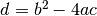. The solutions are real if
. Of course, the answer to that question depends on the value of the discriminant 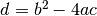. The solutions are real if  , imaginary if
, imaginary if  and 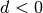, and complex if 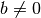 and . The program below implements the above logic in a Python program.
and 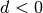, and complex if 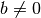 and . The program below implements the above logic in a Python program.
1 2 3 4 5 6 7 8 9 10 11 12 13 14 | a = float(raw_input("What is the coefficients a? "))
b = float(raw_input("What is the coefficients b? "))
c = float(raw_input("What is the coefficients c? "))
d = b*b - 4.*a*c
if d >= 0.0:
print("Solutions are real") # block 1
elif b == 0.0:
print("Solutions are imaginary") # block 2
else:
print("Solutions are complex") # block 3
print("Finished!")
|
After getting the inputs of from the user, the program evaluates the discriminant  . The code d >= 0.0 has a boolean truth value of either True or False depending on whether or not . You can check this out in the interactive IPython shell by typing the following set of commands
. The code d >= 0.0 has a boolean truth value of either True or False depending on whether or not . You can check this out in the interactive IPython shell by typing the following set of commands
In [2]: d = 5
In [3]: d >= 2
Out[3]: True
In [4]: d >= 7
Out[4]: False
Therefore, the if statement in line 7 is simply testing to see if the statement d >= 0.0 if True or False. If the statement is True, Python executes the indented block of statements following the if statement. In this case, there is only one line in indented block. Once it executes this statement, Python skips past the elif and else blocks and executes the print("Finished!") statement.
If the if statement in line 7 is False, Python skips the indented block directly below the if statement and executes the elif statement. If the condition b == 0.0 is True, it executes the indented block immediately below the elif statement and then skips the else statement and the indented block below it. It then executes the print("Finished!") statement.
Finally, if the elif statement is False, Python skips to the else statement and executes the block immediately below the else statement. Once finished with that indented block, it then executes the print("Finished!") statement.
As you can see, each time a False result is obtained in an if or elif statement, Python skips the indented code block associated with that statement and drops down to the next conditional statement, that is, the next elif or else. A flowchart of the if-elif-else code is shown below.
Flowchart for if-elif-else code.
At the outset of this problem we stated that the solutions to the quadratic equation are imaginary only if and . In the elif b == 0.0 statement on line 9, however, we only check to see if . The reason that we don’t have to check if is that the elif statement is executed only if the condition if d >= 0.0 on line 7 is False. Similarly, we don’t have to check if if and for the final else statement because this part of the if, elif, and else block will only be executed if the preceding if and elif statements are False. This illustrates a key feature of the if, elif, and else statements: these statements are executed sequentially until one of the if or elif statements is found to be True. Therefore, Python reaches an elif or else statement only if all the preceding if and elif statements are False.
The if-elif-else logical structure can accomodate as many elif blocks as desired. This allows you to set up logic with more than the three possible outcomes illustrated in the example above. When designing the logical structure you should keep in mind that once Python finds a true condition, it skips all subsequent elif and else statements in a given if, elif, and else block, irrespective of their truth values.
if-else example¶
You will often run into situations where you simply want the program to execute one of two possible blocks based on the outcome of an if statement. In this case, the elif block is omitted and you simply use an if-else structure. The following program testing whether an integer is even or odd provides a simple example.
a = int(raw_input("Please input an integer: "))
if a%2 == 0:
print("{0:0d} is an even number.".format(a))
else:
print("{0:0d} is an odd number.".format(a))
The flowchart below shows the logical structure of an if-else structure.
Flowchart for if-else code.
if example¶
The simplest logical structure you can make is a simple if statement, which executes a block of code if some condition is met but otherwise does nothing. The program below, which takes the absolute value of a number, provides a simple example of such a case.
a = eval(raw_input("Please input a number: "))
if a < 0:
a = -a
print("The absolute value is {0}".format(a))
When the block of code in an if or elif statement is only one line long, you can write it on the same line as the if or elif statement. For example, the above code can be written as follows.
a = eval(raw_input("Please input a number: "))
if a < 0: a = -a
print("The absolute value is {0}".format(a))
This works exactly as the preceding code. Note, however, that if the block of code associated with an if or elif statement is more than one line long, the entire block of code should be written as indented text below the if or elif statement.
The flowchart below shows the logical structure of a simple if structure.
Flowchart for if code.
Logical operators¶
It is important to understand that “==” in Python is not the same as “=”. The operator “=” is the assignment operator: d = 5 assigns the value of 5 to the valiable d. On the other hand “==” is the logical equals operator and d == 5 is a logical truth statement. It tells Python to check to see if d is equal to 5 or not, and assigns a value of True or False to the statement d == 5 depending on whether or not d is equal to 5. The table below summarizes the various logical operators available in Python.
operator function < less than <= less than or equal to > greater than >= greater than or equal to == equal != not equal and both must be true or one or both must be true not reverses the truth value Logical operators in Python
The table above list three logical operators, and, or, and not, that we haven’t encountered before. There are useful for combining different logical conditions. For example, suppose you want to check if  and 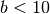 simultaneously. To do so, you would write a>2 and b<10. The code below illustrates the use of the logical operators and, or, and not.
and 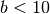 simultaneously. To do so, you would write a>2 and b<10. The code below illustrates the use of the logical operators and, or, and not.
In [5]: a = 5
In [6]: b = 10
In [7]: a != 5 # a is not equal to 5
Out[7]: False
In [8]: a>2 and b<20
Out[8]: True
In [9]: a>2 and b>10
Out[9]: False
In [10]: a>2 or b>10
Out[10]: True
In [11]: a>2
Out[11]: True
In [12]: not a>2
Out[12]: False
Logical statements like those above can be used in if, elif, and, as we shall see below, while statements, according to your needs.
Loops¶
In computer programming a loop is statement or block of statements that is executed repeatedly. Python has two kinds of loops, a for loop and a while loop. We first introduce the for loop and illustrate its use for a variety of tasks. We then introduce the while loop and, after a few illustrative examples, compare the two kinds of loops and discuss when to use one or the other.
for loops¶
The general form of a for loop in Python is
for <itervar> in <sequence>:
<body>
where <intervar> is a variable, <sequence> is a sequence such as list or string or array, and <body> is a series of Python commands to be executed repeatedly for each element in the <sequence>. The <body> is indented from the rest of the text, which difines the extent of the loop. Let’s look at a few examples.
for dogname in ["Max", "Molly", "Buster", "Maggie", "Lucy"]:
print(dogname)
print(" Arf, arf!")
print("All done.")
Running this program produces the following output.
In [1]: run doggyloop.py
Max
Arf, arf!
Molly
Arf, arf!
Buster
Arf, arf!
Maggie
Arf, arf!
Lucy
Arf, arf!
All done.
The for loop works as follows: the iteration variable or loop index dogname is set equal to the first element in the list, "Max", and then the two lines in the indented body are executed. Then dogname is set equal to second element in the list, "Molly", and the two lines in the indented body are executed. The loop cycles through all the elements of the list, and then moves on to the code that follows the for loop and prints All done.
When indenting a block of code in a Python for loop, it is critical that every line be indented by the same amount. Using the <tab> key causes the Code Editor to indent 4 spaces. Any amount of indentation works, as long as it is the same for all lines in a for loop. While code editors designed to work with Python (including Canopy and Spyder) translate the <tab> key to 4 spaces, not all text editors do. In those cases, 4 spaces are not equivalent to a <tab> character even if they appear the same on the display. Indenting some lines by 4 spaces and other lines by a <tab> character will produce an error. So beware!
The figure below shows the flowchart for a for loop. It starts with an implicit conditional asking if there are any more elements in the sequence. If there are, it sets the iteration variable equal to the next element in the sequence and then executes the body—the indented text—using that value of the iteration variable. It then returns to the beginning to see if there are more elements in the sequence and continues the loop until there is none remaining.
Flowchart for for-loop.
Accumulators¶
Let’s look at another application of Python’s for loop. Suppose you want to calculate the sum of all the odd numbers between 1 and 100. Before writing a computer program to do this, let’s think about how you would do it by hand. You might start by adding 1+3=4. Then take the result 4 and add the next odd integer, 5, to get 4+5=9; then 9+7=16, then 16+9=25, and so forth. You are doing repeated additions, starting with 1+3, while keeping track of the running sum, until you reach the last number 99.
In developing an algorithm for having the computer sum the series of numbers, we are going to do the same thing: add the numbers one at a time while keeping track of the running sum, until we reach the last number. We will keep track of the running sum with the variable s, which is called the accumulator. Initially s=0, since we haven’t adding any numbers yet. Then we add the first number, 1, to s and s becomes 1. Then we add then next number, 3, in our sequence of odd numbers to s and s becomes 4. We continue doing this over and over again using a for loop while the variable s accumulates the running sum until we reach the final number. The code below illustrates how to do this.
1 2 3 4 | s = 0
for i in range(1, 100, 2):
s = s+i
print(s)
|
The range function defines the list [1, 3, 5, ..., 97, 99]. The for loop successively adds each number in the list to the running sum until it reaches the last element in the list and the sum is complete. Once the for loop finishes, the program exits the loop and the final value of s, which is the sum of the odd numbers from 1 to 99, is printed out. Copy the above program and run it. You should get an answer of 2500.
while loops¶
The general form of a while loop in Python is
while <condition>:
<body>
where <condition> is a statement that can be either True or False and <body> is a series of Python commands that is executed repeatedly until <condition> becomes false. This means that somewhere in <body>, the truth value of <condition> must be changed so that it becomes false after a finite number of iterations. Consider the following example.
Suppose you want to calculate all the Fibonacci numbers smaller than 1000. The Fibonacci numbers are determined by starting with the integers 0 and 1. The next number in the sequence is the sum of the previous two. So, starting with 0 and 1, the next Fibonacci number is 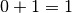, giving the sequence 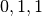. Continuing this process, we obtain  where each element in the list is the sum of the previous two. Using a for loop to calculate the Fibonacci numbers is impractical because we do not know ahead of time how many Fibonacci numbers there are smaller than 1000. By contrast a while loop is perfect for calculating all the Fibonacci numbers because it keeps calculating Fibonacci numbers until it reaches the desired goal, in this case 1000. Here is the code using a while loop.
where each element in the list is the sum of the previous two. Using a for loop to calculate the Fibonacci numbers is impractical because we do not know ahead of time how many Fibonacci numbers there are smaller than 1000. By contrast a while loop is perfect for calculating all the Fibonacci numbers because it keeps calculating Fibonacci numbers until it reaches the desired goal, in this case 1000. Here is the code using a while loop.
x, y = 0, 1
while x < 1000:
print(x)
x, y = y, x+y
We have used the multiple assignment feature of Python in this code. Recall that all the values on the left are assigned using the original values of x and y.
The figure below shows the flowchart for the while loop. The loop starts with the evaluation of a condition. If the condition is False, the code in the body is skipped, the flow exits the loop, and then continues with the rest of the program. If the condition is True, the code in the body—the indented text—is executed. Once the body is finished, the flow returns to the condition and proceeds along the True or False branches depending on the truth value of the condition. Implicit in this loop is the idea that somewhere during the execution of the body of the while loop, the variable that is evaluated in the condition is changed in some way. Eventually that change will cause the condition to return a value of False so that the loop will end.
Flowchart for while loop.
One danger of a while loop is that it entirely possible to write a loop that never terminates—an infinite loop. For example, if we had written while y > 0:, in place of while x < 1000:, the loop would never end. If you execute code that has an infinite loop, you can often terminate the program from the keyboard by typing ctrl-C a couple of times. If that doesn’t work, you may have to terminate and then restart Python.
For the kind of work we do in science and engineering, we generally find that the for loop is more useful than the while loop. Nevertheless, there are times when using a while loop is better suited to a task than is a for loop.
Loops and array operations¶
Loops are often used to sequentially modify the elements of an array. For example, suppose we want to square each element of the array a = np.linspace(0, 32, 1e7). This is a hefty array with 10 million elements. Nevertheless, the following loop does the trick.
import numpy as np
a = np.linspace(0, 32, 1e7)
print(a)
for i in range(len(a)):
a[i] = a[i]*a[i]
print(a)
Running this on my computer returns the result in about 8 seconds—not bad for having performed 10 million multiplications. Of course we could have performed the same calculation using the array multiplication we learned in Chapter 3 (Strings, Lists, Arrays, and Dictionaries). Here is the code.
import numpy as np
a = np.linspace(0, 32, 1e7)
print(a)
a = a*a
print(a)
Running this on my computer returns the results faster than I can discern, but certainly much less than a second. This illustrates an important point: for loops are slow. Array operations run much faster and are therefore to be preferred in any case where you have a choice. Sometimes finding an array operation that is equivalent to a loop can be difficult, especially for a novice. Nevertheless, doing so pays rich rewards in execution time. Moreover, the array notation is usually simpler and clearer, providing further reasons to prefer array operations over loops.
List Comprehensions¶
List comprehensions are a special feature of core Python for processing and constructing lists. We introduce them here because they use a looping process. They are used quite commonly in Python coding and they often provide elegant compact solutions to some common computing tasks.
Consider, for example the  matrix
matrix
In [1]: x = [[1, 2, 3], [4, 5, 6], [7, 8, 9]]
Suppose we want to construct a vector from the diagonal elements of this matrix. We could do so with a for loop with an accumulator as follows
In [2]: diag = []
...: for i in [0, 1, 2]:
...: diag.append(x[i][i])
...:
In [3]: diag
Out[3]: [1, 5, 9]
List comprehensions provide a simpler, cleaner, and faster way of doing the same thing
In [4]: diagLC = [x[i][i] for i in [0, 1, 2]]
In [5]: diagLC
Out[5]: [1, 5, 9]
A one-line list comprehension replaces a three-line accumulator plus loop code.
Suppose we now want the square of this list:
In [6]: [y*y for y in diagLC]
Out[6]: [1, 25, 81]
Notice here how y serves as a dummy variable accessing the various elements of the list diagLC.
Extracting a column from a 2-dimensaional array such as x is quite easy. For example the second row is obtained quite simply in the following fashion
In [7]: x[1]
Out[7]: [4, 5, 6]
Obtaining a column is not as simple, but a list comprehension makes it quite straightforward:
In [7]: c1 = [a[1] for a in x]
In [8]: c1
Out[8]: [2, 5, 8]
Another, slightly less elegant way to accomplish the same thing is
In [9]: [x[i][1] for i in range(3)]
Out[9]: [2, 5, 8]
Suppose you have a list of numbers and you want to extract all the elements of the list that are divisible by three. A slightly fancier list comprehension accomplishes the task quite simply and demonstrates a new feature:
In [10]: y = [-5, -3, 1, 7, 4, 23, 27, -9, 11, 41]
In [14]: [a for a in y if a%3==0]
Out[14]: [-3, 27, -9]
As we see in this example, a conditional statement can be added to a list comprehension. Here it serves as a filter to select out only those elements that are divisible by three.
Exercises¶
Write a program to calculate the factorial of a positive integer input by the user. Recall that the factorial function is given by
 so that
so that  ,
,  ,
,  , 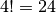, ...
, 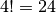, ...- Write the factorial function using a Python while loop.
- Write the factorial function using a Python for loop.
Check your programs to make sure they work for 1, 2, 3, 5, and beyond, but especially for the first 5 integers.
The following Python program finds the smallest non-trivial (not 1) prime factor of a positive integer.
n = int(raw_input("Input an integer > 1: ")) i = 2 while (n % i) != 0: i += 1 print("The smallest factor of n is:", i )
- Type this program into your computer and verify that it works as advertised. Then briefly explain how it works and why the while loop always terminates.
- Modify the program so that it tells you if the integer input is a prime number or not. If it is not a prime number, write your program so that it prints out the smallest prime factor. Using your program verify that the following integers are prime numbers: 101, 8191, 947431.
Consider the matrix list x = [[1, 2, 3], [4, 5, 6], [7, 8, 9]]. Write a list comprehension to extract the last column of the matrix [3, 6, 9]. Write another list comprehension to create a vector of twice the square of the middle column [8, 50, 128].
Write a program that calculates the value of an investment after some number of years specified by the user if
- the principal is compounded annually
- the principle is compounded monthly
- the principle is compounded daily
Your program should ask the user for the initial investment (principal), the interest rate in percent, and the number of years the money will be invested (allow for fractional years). For an initial investment of $1000 at an interest rate of 6%, after 10 years I get $1790.85 when compounded annually, $1819.40 when compounded monthly, and $1822.03 when compounded daily, assuming 12 months in a year and 365.24 days in a year, where the monthly interest rate is the annual rate divided by 12 and the daily rate is the annual rate divided by 365 (don’t worry about leap years).
Write a program that determines the day of the week for any given calendar date after January 1, 1900, which was a Monday. Your program will need to take into account leap years, which occur in every year that is divisible by 4, except for years that are divisible by 100 but are not divisible by 400. For example, 1900 was not a leap year, but 2000 was a leap year. Test that your program gives the following answers: Monday 1900 January 1, Tuesday 1933 December 5, Wednesday 1993 June 23, Thursday 1953 January 15, Friday 1963 November 22, Saturday 1919 June 28, Sunday 2005 August 28.